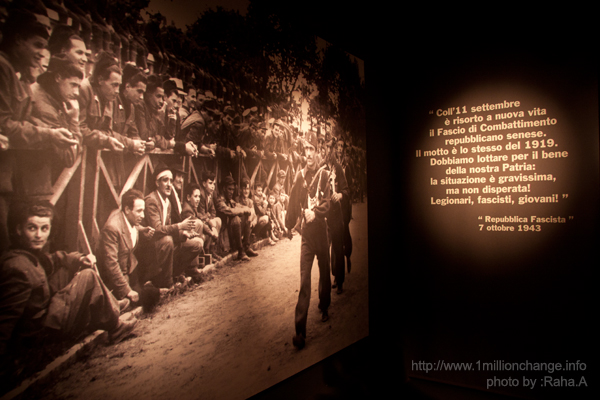

|
|

حق "همیشه" با فاشیسم نیست، با مقاومت است
گزارشی از خشونت، مقاومت و روایت های زنان ایران و ایتالیا
سه شنبه16 آذر 1389
تغییر رای برابری - نوامیر 2010، جشنواره کتاب سی ینا در ایتالیا با عنوان "خواندن پرواز است" بخش های را به بحث زنان و مقامت اختصاص داده بود. برپایی نمایشگاه عکس RESISTER، معرفی کتاب RE-SISTERS و میزِگردی با عنوان "زنان و مقاومت معاصر"، "دیدار با مدافعان حقوق زنان ایران" و نمایشگاه "راهروهای تاریخ". سازمان برابری حقوق" و "انیستیتوی تاریخ مقاومت بر علیه فاشیست" شهر سی ینا از هماهنگ کنندگان این جشنواره بودند.
آنان بر این اعتقادند که تجربه مشابه زنان ایتالیا و ایران از دوران های استبدادی و خشونت و تبعیض علیه زنان درک، همراهی و همبستگی مشترکی را بین زنان ایران و ایتالیا رقم می زند و موجب می شود که از تجربه های یکدیگر بیاموزند و راه های گسترش رابطه و عمل مشترک را گسترش دهند.
در این برنامه ایسوکه آیکپیتانی، بنیانگذار "سازمان کمک به زنان نیجریه ای قربانی فحشاء" و نویسندۀ کتاب "دختران بِنین سیتی" از نحوۀ کمک به زنانی که درگیر و قربانی تجارت و قاچاق زنان می شوند ، سخن گفت. و کریستیانا چِلّا، خبرنگار و نمایندۀ "سازمان ایتالیایی حمایت از زنان افغانی (CISDA )" ، وضعیت نگران کنندۀ زنان افغان بعد از اشغال اروپایی-آمریکایی در افغانستان را تشریح کرد و گفت که این اشغال منجر به بالا رفتن درصد خشونت بر علیه زنان شده است.

دیدار با زنان ایران : مقاومت بی توقف دربرابر خشونت بی توقف
برنامه روز 12 نوامبر نشستی با فعالان حقوق زنان در ایران با عنوان زنان ومقاومت بود. در این نشست، علاوه بر سخنرانی سیمونتا پلگرینی رئیس بخش فرصت های برابرِ شهر سی ینا، آنا کارلی مسئول بنیاد Rocco Derek Bernabei ، که برای لغو قانون اعدام در دنیا مبارزه می کنند، از فعالیتش در این زمینه سخن گفت. وی مصرانه خواستار منع قانون اعدام در کشورهایی شد که هنوز به اجرای این مجازات ادامه می دهند. وی از فعالان زن ایران سخن گفت و از این که زنان ایران و تلاششان برای رسیدن به برابری حقوقی که حق مسلمشان است، قابل تقدیر است.
پروین اردلان فعال جنبش زنان درباره "زنان و جنبش زنان در مقاومت" صحبت کرد و گفت اگر زنان ایران تحت خشونت هستند و زنی چون سکینه از نمادهای تبعیض و خشونت قانونی علیه زنان در ایران است ، ما تصویری چون نسرین ستوده را داریم که نماد مقاومت زنان و فعالان حقوق زنان و بشر در ایران است. آنها وکلای زنانی چون سکینه هستند ونسبت به تبعیض معترض اند و اکنون خود نیز به دلیل دفاع از حقوق موکلان شان مورد تبعیض قرار گرفته اند.
پروین اردلان با نشان دادن تصاویری چون عالیه اقدام دوست، ژیلا بنی یعقوب، بهاره هدایت، شیوا نظرآهاری، شبنم مدد زاده و...و شرح فعالیت ها و اتهامات، مدت محکومیت و نقش آنان در جنبش های اجتماعی گفت :«اینها نمونه هایی از زنانی هستندکه عرصه مقاومت را نه تنها درجنبش زنان که در سایر جنبش های اجتماعی بزرگ و بزرگتر کرده اند و هرکدام شان علاوه براین که فعال جنبش زنان هستند در حوزه های دیگر و جنبش های دیگر فعالیت می کنند. آنها نه تنها در برابر خشونت و تبعیض مقاومت می کنند و هزینه می پردازند بلکه نشان می دهند که تصویر زن ایرانی در جهان یک تصور قربانی نیست این تصویر روی دیگری دارد که آن مقاومت زنان است. چنین دستاوردی حاصل تلاش جنبش زنان به طور خاص و زنان ایران به طور عام هست. اگر چنین تصویری را نبیینم نیمی از واقعیت را ندیده ایم و این بر همه فعالیت های ما حتی فعالیت های حمایتی مان تاثیر می گذارد». وی در ادامه به شرح استراتژی های مقاومت زنان در 30 سال اخیر، در حوزه های فردی و جمعی پرداخت و در بخش دیگری از صحبت هایش گفت: «در برابرخشونت بی توقف و سیستماتیک، مقاومت و سیستماتیک و بی توقف زنان را شاهد هستیم و این مقاومت همچنان ادامه دارد».
صبری نجفی فعال حقوق زنان در کمپین یک میلیون امضای ایتالیا با اشاره به کوشش هایی که برای آزادی نسرین ستوده به عمل آمده است با قرائت درخواستی از سوی فعالان حقوق زن ازمدافعان حقوق زن و برابری خواهی در ایتالیا خواست که تمام تلاش شان را برای آزادی نسرین ستوده به کار بگیرند. در بخشی از این نامه آمده است :« حاکمیت ایران قصد دارد با فشار بر نسرین ستوده که سمبل مقاومت یک وکیل شجاع در برابر بی عدالتی هست، امکان دفاع و فعالیت های حقوق بشری را در ایران کاهش داده و واهمه فعالیت در این زمینه را افزایش دهد ». وی از فعالان زنان در ایتالیا بخصوص فعالان زن سی ینا خواست همچون گذشته برای آزادی نسرین ستوده و فشار بر دولت ایران برای انجام این خواسته انسانی حمایت کنند. این درخواست در دیدار با رییس بخش شورای صلح شهرداری شهر فلورانس خانم سوزانا اگوستینی نیز مطرح شد و آنان نیز قول حمایت و همراهی دادند و در برنامه امنستی نیز حضور یافتند.
در ادامه برنامه، فاطمه رضایی از حامیان مادران پارک لاله در آلمان درباره فعالیت های حامیان مادران عزادار و تجمع ها و نشست هایی که تشکیل داده اند، صحبت کرد. این کمبته در شهرسی ینا اکسیونی را ترتیب داده و همین طور در برنامه سراسری و خیابانی امنستی برای آزادی زندانیان با عنوان " یک چهره از حقوق بشر" در شهر فلورانس ایتالبا همکاری داشت.
سخنران دیگر لیلا کرمی از دانشگاه رم بود که درباره فمینیست اسلامی در ایران مورد گفتمان دین و حقوق زنان در خانواده در ایران سخن گفت. به عقیدۀ او نبود ارتباط بین ارگانهای دولتی و حوزه های اسلامی که به بازخوانی مسائل زنان در اسلام مشغولند یکی از نارسایی های دولت ایران برای تغییر قوانین خانواده است. در این برنامه همچنین ماندانا دیهیم نویسنده "کتاب ایرانی که من می شناختم" بخشی از خاطرات منتشرشده اش را برای حاضران خواند.

"راهروهای تاریخ" : فاشیسم و دستکاری فرهنگ
روز جمعه 27 نوامبر نیز با هماهنگی سازمان فرصت های مساوی و انیستیتوی تاریخی مقاومت شهر سی ینا، نمایشگاه "اتاق های خاطرات" شامل عکس ها و خاطرات وقایع دوران فاشیسم در ایتالیا برای عموم به نمایش در آمد. پیش از آن خانم لورا ماتیی، مسئول این انیستیتو، فرصت دیدار فعالان زنان ایران را از اتاق های خاطرات را فراهم کرد.
راهروی های تاریخ در گذشته پایگاه سربازهای فاشیست های ایتالیا و شکنجه گاه ضد فاشیست های ایتالیا بوده است. اتاق های خاطرات، بازسازی و ثبت تاریخ سیاه فاشیسم در تودرتوهای تاریک، با کرکره ها و پنجره های بسته به سان دوران فاشیسم است که بخشی از حقیقت آن دوران را بازگو می کنند. بر دیوار راهروی ورودی اتاق ها تصاویرنخستین اعضای حزب فاشیسم که غالبا طبقه متوسط و تحصیل کرده هستند نقش بسته است و همین طور تصاویر کودکان و نوجوانان در برنامه های یک دست سازی فاشیسم. لورا می گوید:« فاشیسم سعی می کرد آموزش و تربیت و فرهنگ را دستکاری کند. برنامه عمل فاشیسم کنترل فکر و عمل بود . برای همین برای آنها چند چیز مهم بود: کودکان، نسل جوان، پیشکسوتان و افراد شناخته شده و معتبر، و جنگ » دعوت به نژاد پرستی از شعارهای دیگر فاشیسم است که با تصاویری از جداسازی نژادی و مذهبی شهروندان ایتالیایی تکمیل شده است. در تصاویر ،به قدرت رسیدن فاشیسم را طی سال های 1941 تا 1945 و اوج خشونت و کشتار و کنترل سیتماتیک آن را می بینیم .
" جنگ برای مرد است همانطور که بارداری برای زن" عنوان نصب شده بر دیوار و عنوانی آشنا برای زنان ایران ، سخن معروف موسولینی دیکتاتور فاشیست ایتالیا است که همه جای ایتالیاخوانده و شنیده می شد. لورا می گوید :« به این روش زنان را به بچه داری تشویق می کردند. تعداد فرزندان هرخانواده ای به 10 که می رسید کمک مالی بیشتری دریافت می کردند.به همین ترتیب کسانی که ازدواج نمی کردند مجبور به پرداخت مالیات بودند.» او می افزاید:« با وجود آن که طبق قانون اساسی ایتالیا بین زن و مرد تبعیض وجود نداشت اما در دوران فاشیسم وظیفه زنان فقط زایمان بود . زنان هیچ کاری نمی توانستند بکنند. یا زایمان می کردند و یا اگر کاری برای آنها وجود داشت درصد کمی معلم های دبستان ها و کارگر کارخانه ها بودند. اگر درصد کارگرهای زن بالا می رفت مردان نمی توانستند کار کنند. زنان زیر 21 سال نیز نمی توانستند بدون همراهی پدر یا جد پدری شان به مکان های عمومی بروند. ما در دهه 1960 و 1970 و رشد جنبش برابری خواهی و رهایی زنان توانستیم که حق طلاق و حق سقط جنین و دیگر حقوق را کسب کنیم ».
هنگام مشاهده روایت تصویری اتاق ها، لورا از مقاومت زنان سخن می گوید و داستان زنی را که سرگذشتش بر دیوار نقش بسته است، توضیح می دهد :« موسولینی به خانواده هر کودکی که در روز تولد او به دنیا می آمد مقرری می داد، این زن برای نگرفتن آن مقرری تاریخ تولد کودکش را یک روز دیرتر اعلام می کند و این خلاف شعار رایج "حق همیشه با موسولینی است " بود. خود لورا تعریف می کند که 28 اکتبر روز به قدرت رسیدن فاشیسم بود و هرکه در آن روز ازدواج می کرد از طرف موسولینی هزار دلار می گرفت. من برای نشان دادن مقاومتم 29 اکتبر ازدواج کردم و وقتی هم بچه دارشدم پولی نگرفتم».

لورا همراه با نشان دادن تصاویر شرح می دهد که با جنگ داخلی و شکل گیری گروه های ضد فاشیسم، زنان هم بیشتر وارد عمل شدند. با کار آنان در کارخانه ها، در زمانی که مردان در جنگ بودند، اقتصاد برپایه کار زنان بنا شد و حتی عده ای از آنان هم هم به جمع پارتیزان ها پیوستند. 6 مانیتور در یکی از اتاق ها برای شرح زندگی 6 پاتیزان که یکی از آنان زن بوده اختصاص داده شده است. زنی آکاردئون به دست نقش بسته بردیوار یکی از اتاق ها، شادی پایان جنگ را نشان می دهد.
آنچه بر راهروهای تاریخ، دیوارهای اتاق خاطرات و سنگ قبر فاشیسم نقشه بسته است، نشان می دهد که "حق "همیشه" با فاشیسم نیست، با مقاومت است " .